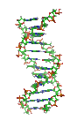

School of BichemistryEstd. 1984
Devi Ahilya Vishwavidyalaya, Indore (M.P.)


Professor & Head
School Of Biochemistry, DAVV, Indore
Ph.D Biochemistry, Devi Ahilya Vishwavidyalaya, Indore(1985)
rekhagadre29@gmail.com
Research work covers the studies on regulatory aspects of enzymes of nitrogen assimilation, such as, nitrate reductase, glutamate dehydrogenase and glutamate synthase, involving the nutritional and environmental factors. Work done also includes analyzing mode of action of trace element pollutants, Hg, Cd, Pb, As, Se and Al on these enzymes and elucidating possible mechanisms of effects. Studies involving the effects of metallic pollutants on chlorophyll metabolism analyzing the role of precursor metabolites, inhibitors and thiol compounds in relation to chlorophyll biosynthesis were worked out. Also regulatory aspects of an earlier enzyme of the pathway, δ - amino levulinic acid dehydratase, and intermediates of chlorophyll biosynthetic pathway in response to metallic toxicants were elucidated. Studies on salinity stress effects related to enzymes of nitrogen assimilation and effects of essential metal ions related to chlorophyll biosynthesis are in progress.
| # | Name | Year | Title |
|---|---|---|---|
| 1 | Dr. Meeta Jain | 1995 | Effect of trace element pollutants, Se, As & Hg, on chlorophyll metabolism. |
| 2 | Dr. Jot Vyas | 1996 | Effect of trace element pollutants, Se & As, on nitrogen assimilation pathway. |
| 3 | Dr. Mamta Jain | 1999 | Effect of heavy metal pollutants, Cd & Pb, on enzymes of nitrogen assimilation pathway in light and dark. |
| 4 | Dr. Priyanka Gupta | 2007 | Effect of Metallic Toxicants, Al and Hg, on Enzymes of Nitrogen Assimilation and Chlorophyll Metabolism. |
| 5 | Dr. Juliana Sarengthem | 2012 | Effect of cadmium and lead on enzymes of chlorophyll metabolism and ammonia assimilation. |
| 6 | Ms. Samatha Gunapati | 2015 | Isolation and Characterization of Draught related NAC Transcription factor from Cotton roots (Gossipium herbacium). Co-supervisor : Dr. V.A. Sane, Scientist, National Botanical Research Institute, Lucknow |
| 7 | Mrs. Sonal Dhamgaye | 2017 | Evaluation of salinity stress on the key enzymes of nitrogen assimilation in Phaseolus vulgaris. |
| 8 | Mr. Venkat Are | 2018 | Structural and functional characterization of aminopeptidase P fold proteins. Co-supervisor: Dr. Ravindra Makde, RRCAT, Indore |
| # | Name | Year | Title |
|---|---|---|---|
| 1 | Ms. Radhika Chinchalkar | Appld. 2013 | Studies on effects of metallic nutrients, Mn, Ni and Zn, in relation to chlorophyll metabolism and oxidative stress in maize. |
List of Publications :-